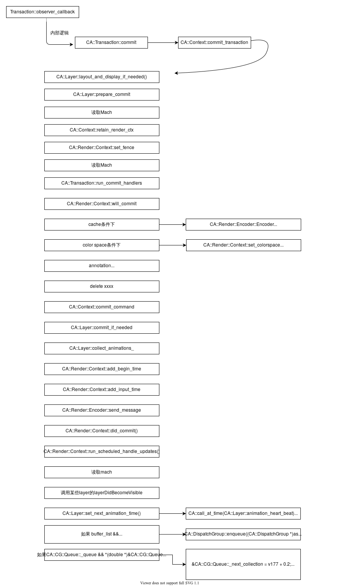
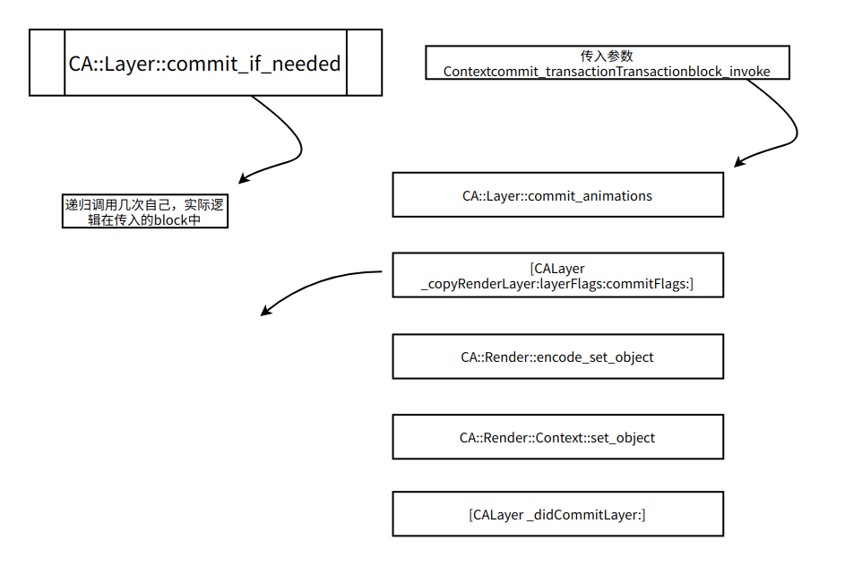
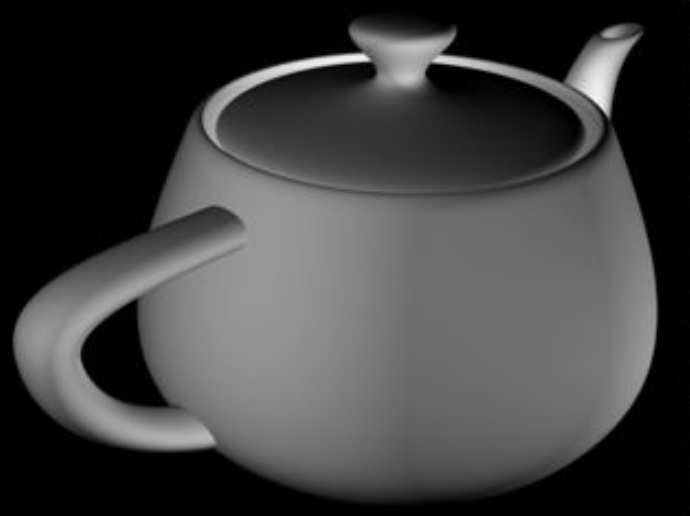

【Aug】深入理解 iOS 渲染和动画
面向中级工程师，阅读本文的要求：
熟悉 UIView 和 CALayer
对 Runloop 有比较深入的了解
能够使用 OpenGL 进行简单的图形绘制，了解 OpenGL 中的基本概念（如 VBO 和
FBO ）
了解基本的 GPU 渲染管线（ IMR / TBR / TBDR ）
线性代数比较好【图形学概念有要求，也可以跳过】
目录
iOS 渲染渲染
- CoreAnimation 框架在 iOS 渲染中的角色
- Runloop 在 iOS 渲染中的角色
CPU 和 GPU 渲染
- CPU 渲染
- 逆向CoreGraphics
- 使用 CPU 渲染
- GPU 渲染
- 为什么 GPU 这么”快”
- iOS GPU 渲染架构—— TBDR
- 从 OpenGL 到 Metal 的改进
- CPU 渲染
移动端 GPU 方面的 APM
- CPU 与 GPU 之间的协作
- GPU 负载监控
- GPU 内存负载监控
图形学基本概念简介
- 颜色的计算机模型
- 拟合任意曲面
- 抗锯齿常用方法
- 光照模型
iOS 渲染
iOS是移动端图形体验最优秀的平台，开发人员依靠 UIKit 和 CoreAnimation
提供的丰富的、优秀的接口完成了绚丽的效果和优异的用户体验，下面我们回顾一下目前为止我们对
UIKit 和 CoreAnimation 中最常用的两个类的思考
UIKit & CoreAnimation
UIView
UIView 是我们使用 UIKit 构建 UI
的最小单位，负责管理屏幕上某个区域内的内容：
负责区域内内容的展示
负责区域内用户交互的处理
负责区域内子UIView的上述两项任务的管理
实际上，UIView 内部的逻辑更多的是任务2和任务3 。
任务1则交予每个 View 都持有一个的 CALayer 实现。
CALayer
CALayer 全部的工作都围绕它的 contents 属性展开。CALayer 致力于把
contents 定义的数据快速准确的展现在屏幕指定的区域。
当我们想在 UIView 的区域内绘制一个 Button
样式，我们需要画一个圆角矩形，矩形内部放一些诸如”确认”之类的文字，矩形外绘制一些阴影，从而把”按钮”这个意思传递给用户。完成绘制的工作是复杂且重复的，这也是
CoreAnimation 存在的意义。
我们知道OpenGL是直接操作GPU从而完成图形的绘制工作，那么可以认为，CoreAnimation
预定义了大量的”OpenGL ES
逻辑”，以最好的性能供我们绘制出精美复杂的图形样式，构建出整个 App 的 UI
界面。
同时，现代计算机系统允许生成各种各样炫酷的动画效果，这也是 CoreAnimation
的名字，CoreAnimation 提供了keyframe animation， property animation
等简单易用的动画封装。
CALayer本身构建了三种 Layer Tree：
ModelLayer
返回与该CALayer对象关联的模型model层对象（如果有的话）。
PresentationLayer
返回该CALayer对象关联的表示presentation层对象当前显示在屏幕上的状态的副本。
需要注意这并不是一个属性，是一个方法。
如果你去 KVO 方法的返回值，会发现这个 instance
是不会发生变化，它只是在你请求那一瞬间，通过 CoreAnimation
内部方法去尝试读取 Refer Tree
中执行动画的对象的信息，然后根据信息新建一个 CALayer返回回来。
Refer Tree
执行动画的真正对象，为 CoreAnimation 内部对象。
动画
对于 CoreAnimation
动画，首先思考一下，一个几何在屏幕上的位置移动，本质是什么？
本质是在时间的起点和终点的过程里，每一次屏幕刷新，某个物体的位置做一点点均匀的移动，人眼就会认为它在均匀的移动。
比如0s ～
1s，在x轴位移120pt，那么每一帧我们都给位移2pt，对于人眼来说就是一个连续的动画了。
反映到 CoreAnimation 做的工作是什么呢？就是生成了这样一个东西：
*
帧序号(时间) 1 (0.016) 2 (0.032) 3 (0.048) 4 (0.016 * 4) 5 (0.016 * 5) 6 (0.016 * 6) 7 (0.016 * 7) 8 (0.016 * 8)
几何的X位置 2 4 6 8 10 12 14 16
这样一个长度为60的数组，第一行为帧序号，括号内为现实世界的时间节点
那么我们所谓的 timingFunction 做的是什么呢？
实际上就是改变了时间节点 = 0.016 * 帧序号 这个对应关系，结合一个曲线的
timingFunction
，给定在0.048这个时间节点，需要的可能就不是第3帧，而是原来的直线
timingfunction 的3.2帧或者2.8帧的几何位置 X。
回到 CALayer 的 presentation tree 和 model tree
，结合上述动画过程，presentation
tree中的对象在任何一个时间节点都能拿到最近一帧上该几何体X的位置，而model
tree，在整个动画过程中不会发生变化。
Facebook 的 POP 就是一个替代 CoreAnimation
作为插值器的库，本质上就是自建上面的数组表格，依赖一个 CADisplayLink
来完成每一帧的提交渲染，CADisplayLink的工作原理后面我们会详细说明，现在我们只需要支持它每0.0167s
触发一次指定的 selector。
那么CoreAnimation的动画是通过CADisplayLink来触发每一帧的提交的吗？网上没有搜到相关的说明，我们来研究一下。
通过符号断点CADisplayLink的初始化方法，我们发现创建一个CAAnimation的时候并没有创建一个CADisplayLink。
通过监控 Runloop
唤醒情况，发现在添加Animation后只唤醒了26次，但是动画仍然在不停的运行（次数我们设置的
CGFLOAT_MAX）。
虽然Runloop没有运行，但是屏幕仍然在不断刷新，同时，使用LLDB断住App所有的线程后，屏幕上的CALayer动画仍然在更新。
由此推测，CAAnimation更新帧动画是不受App进程控制的，给进程断点不停止动画证实了这个猜测。个人猜测进程将这个Animation的相关信息插值计算完成后提交给跟SpringBoard这种文件管理进程类似的
Graphics 进程去完成，这个进程有同事提到是 BackBoard ，后面我们深入 Mach
后会对这个猜测进行验证。TODO
小结：
目前为止，Core Animation的功能为：
OpenGL ES / CoreGraphics 等基本渲染库的封装
动画插值器
图形学时间
计算机动画扩展：
计算机动画发展的很快，不再局限于某些物体僵硬的位置和伸缩变换，出现了很多算法实现各种效果，总结来看，计算机动画分为以下几种：
2D动画：
图像变形（Image Morphing）
形状混合（Shape blending）
3D动画：
关键帧动画
变形物体动画（自由体变形技术，FFD）
那么CoreAnimation在动画方面关注的显然是2D动画，我们也来讲解一下关于图像变形和形状混合。
图像变形
图像变形有两种基本的方法：
基于单张图像进行形变
如：宽高拉伸
基于多张图像进行插值
此方法可以引入用户交互，指定某些特征进行动画，更加可控
注意噢，这里的特征可不是iOS动画中的property，是指对某个图像人为框定几个特征点，进行拉伸形变。
形状混合
二维图形动画，都可以简化为为多边形处理。二维的形状混合，即在两个关键帧的多边形之间插入新的多边形。
插入新的多边形，需要解决的问题就是前后两个关键帧之间，顶点的对应关系和顶点之间插值路径的问题。这两个问题在siggraph
1992和1993的论文上得到了解决。
渲染服务与Runloop
Refference:
https://blog.ibireme.com/2015/05/18/runloop/
https://opensource.apple.com/source/CF/CF-635/CFRunLoop.c.auto.html
http://blog.handy.wang/blog/2015/10/03/uiviewyu-calayerxie-zuo-xuan-ran-jie-mian-de-guo-cheng/
Runloop
当用户没有操控手机的时候，大部分情况下手机不需要做什么渲染工作，当我们点击一个按钮，或者收到一些消息的时候，屏幕才会需要出现新的内容，才会需要进行渲染工作以把内容呈现在屏幕上。
因此理解渲染流程，必须先理解如何触发渲染，Runloop是整个触发机制的核心。
runloop如何waiting？
runloop如何wakeup？
我们知道Runloop的基本流程是：
typedef CF_OPTIONS(CFOptionFlags, CFRunLoopActivity) {
kCFRunLoopEntry = (1UL << 0),//即将进入
kCFRunLoopBeforeTimers = (1UL << 1),//处理timer前
kCFRunLoopBeforeSources = (1UL << 2),//处理source0前
kCFRunLoopBeforeWaiting = (1UL << 5),//休眠前
kCFRunLoopAfterWaiting = (1UL << 6),//休眠后，刚唤醒
kCFRunLoopExit = (1UL << 7),//退出
kCFRunLoopAllActivities = 0x0FFFFFFFU//全部事件
};
本图中source0后的port错误，source 0不基于port
**RunLoop 的waiting/wake的核心就是一个
mach_msg()**，当一个RunLoop处理完事件后，即将进入休眠时，会经历下面几步：
1.指定一个将来唤醒自己的mach_port端口
2.调用mach_msg来监听这个端口，保持mach_msg_trap状态
3.由另一个线程（比如有可能有一个专门处理键盘输入事件的loop在后台一直运行）向内核发送这个端口的msg后，mach_msg_trap状态被唤醒，RunLoop继续运行
//通知即将休眠
//__CFRUNLOOP_IS_CALLING_OUT_TO_AN_OBSERVER_CALLBACK_FUNCTION__(kCFRunLoopBeforeWaiting);
//——————————————————————————————————————————
//——————————————————————————————————————————
//进入内核态
__CFRunLoopSetSleeping(rl);//单纯的给runloop的struct设置一下状态flag
__CFPortSetInsert(dispatchPort, waitSet);//进入msg trap
__CFRunLoopModeUnlock(rlm);//pthread unlock
__CFRunLoopUnlock(rl);//pthread unlock
if (kCFUseCollectableAllocator) {
objc_clear_stack(0);
memset(msg_buffer, 0, sizeof(msg_buffer));
}
msg = (mach_msg_header_t *)msg_buffer;
__CFRunLoopServiceMachPort(waitSet, &msg, sizeof(msg_buffer), poll
? 0 : TIMEOUT_INFINITY);
//Boolean poll = sourceHandledThisLoop || (0LL ==
timeout_context->termTSR);
//__CFRunLoopServiceMachPort使线程处于trap状态，直到获得msg返回或者什么异常返回
//内部封装的mach_msg逻辑
__CFRunLoopLock(rl);//pthread lock
__CFRunLoopModeLock(rlm); //pthread lock
// Must remove the local-to-this-activation ports in on every loop //
iteration, as this mode could be run re-entrantly and we don't //
want these ports to get serviced. Also, we don't want them left // in
there if this function returns.
__CFPortSetRemove(dispatchPort, waitSet);
rl->_ignoreWakeUps = true;
//---------------------------------------
//通知从休眠中唤醒
下面看下 __CFRunLoopServiceMachPort是如何调用mach_msg的
static Boolean __CFRunLoopServiceMachPort(mach_port_name_t
port, mach_msg_header_t **buffer, size_t buffer_size,
mach_msg_timeout_t timeout) {
Boolean originalBuffer = true;
for (;;) {
/\ In that sleep of death what nightmares may come ... */*
mach_msg_header_t *msg = (mach_msg_header_t *)*buffer;
msg->msgh_bits = 0;
msg->msgh_local_port = port;
msg->msgh_remote_port = MACH_PORT_NULL;
msg->msgh_size = buffer_size;
msg->msgh_id = 0;
kern_return_t ret = mach_msg(msg,
MACH_RCV_MSG|MACH_RCV_LARGE|((TIMEOUT_INFINITY != timeout) ?
MACH_RCV_TIMEOUT :
0)|MACH_RCV_TRAILER_TYPE(MACH_MSG_TRAILER_FORMAT_0)|MACH_RCV_TRAILER_ELEMENTS(MACH_RCV_TRAILER_AV),
0, msg->msgh_size, port, timeout, MACH_PORT_NULL);
//mach_msg基于timeout事件决定停留在内核态的时间，调用后如果能获得信息，则设置在msg中，然后返回，否则停留在msg_trap
if (MACH_MSG_SUCCESS == ret) return true;
if (MACH_RCV_TIMED_OUT == ret) {
if (!originalBuffer) free(msg);
*buffer = NULL;
return false;
}
if (MACH_RCV_TOO_LARGE != ret) break;
buffer_size = round_msg(msg->msgh_size + MAX_TRAILER_SIZE);
if (originalBuffer) *buffer = NULL;
originalBuffer = false;
*buffer = realloc(*buffer, buffer_size);
}
HALT;
return false;
}
如何让线程从mach_msg中退出：
其他进程通过CFNotificationcenter发送mach_msg
通过hook mach_msg，监控所有发送过来的mach_msg
CADisplayLink
深入聊一下CADisplayLink
我们发现这是一个从port转发过来的，我们打印一下runloop，发现：
2 : <CFRunLoopSource 0x282dc8000 [0x1cadcf728]>{signalled = No,
valid = Yes, order = -1, context = <CFMachPort 0x282fd8160
[0x1cadcf728]>{valid = Yes, port = 440b, source = 0x282dc8000,
callout = <redacted> (0x19085e28c), context = <CFMachPort context
0x2823d0000>}}
有这样一个source
1被加入了runloop，这个port应该就是V-Sync信号转发过来的port，V-sync信号通过每16.7ms的mach
msg转发，不断的激活本app的runloop，触发一个item。
这里看到item，很自然的联想到这里是不是一个链表之类的数据结构。实际上，我们可以多次添加不同的CADisplayLink
instance到runloop中，就像这样：
但是如果这样
会发生什么呢？
drawSomeThing在一个V-sync里被触发了两次。
原因是：
[CADisplayLink displayLinkWithTarget:self
selector:@selector(drawSomeThing)]
内部=>[CADisplayLink displayLinkWithDisplay:target:selector:]
内部新生成了一个DisplayLinkItem (v8)

调用[CADisplayLink addToRunLoop:forMode:]时，内部：
只检测了：
如果这个displayLink已经被加入到其他runloop中，直接抛出exception
如果重复添加某个mode，则直接return【runloop仍然为link的runloop】
所以新的item会被顺利加入，然后每次vsync触发两次。
dispatch_async
是不是很好奇为什么异步操作还跟runloop有关系？实际上这里需要限定条件，只有target
thread == main thread的时候，异步的block行为才会跟runloop扯上关系。
TODO
NSTimer
TODO
dispatch_after
TODO
performSelector:delay:
TODO
Runloop小结
如何进入waiting？
调用mach_msg，设置好timeout参数和port就可以进入内核态无限期的等待mach_msg
如何wakeup？
注册source1事件，被外部进程的通过IPC（port机制）激活
通过timer激活
通过其他线程手动wakeup该线程的某个source0。
通过gcd
Runloop如何触发渲染？
那么渲染在runloop哪里呢？带着这个问题，我们po一下runloop：
由于runloop比较多的mode，每个mode都是在组合常见的几个item，关于mode和item不清楚的同学可以自行查阅相关资料，这里我截取一个mode来说明：
在这个mode中，一共6个Observer，5个source，source中4个source0，1个source1
source0:非基于port的，不会注册mach port
source1:基于port，注册mach port，通过这个mach port被外部进程IPC发送消息
我们对所有的source/observer的callout下个断点看看：
*
[source] GraphicsServices`PurpleEventSignalCallback
**[source]** UIKitCore`__handleHIDEventFetcherDrain
[observer BeforeTimers ] 注册两次order不同 UIKitCore`_wrapRunLoopWithAutoreleasePoolHandler
**[source version 1]** GraphicsServices`PurpleEventCallback
[source] FrontBoardServices`FBSSerialQueueRunLoopSourceHandler
**[observer beforeWaiting | exit]** UIKitCore`_afterCACommitHandler
[observer beforeWaiting ] UIKitCore`_UIGestureRecognizerUpdateObserver
**[source]** UIKitCore`__handleEventQueue
[observer beforeWaiting | exit] UIKitCore`_beforeCACommitHandler
**[observer beforeWaiting | exit]** QuartzCore`CA::Transaction::observer_callback
大概负责以下工作：
AutoreleasePool相关的observer
手势/Event相关的，由UIKit注册
QuartzCore的CATransaction注册了一个
GraphicsService注册的基于port的source1
在前面我们有说，autoReleasePool是在runloop启动时就生成了一个基本的pool来使用，而transaction则是有需要才建立的，这一步是怎么处理的呢？
前面我们看到，CATransaction注册了beforewaiting的事件，在beforewaiting的时候，CA::Transaction::observer_callback(__CFRunLoopObserver*,
unsigned long,
void*)，下面分析一下callback做了什么，下图左边为父节点，右边为子节点。


CATransaction
整个CoreAnimation的工作流程核心，它不是对openGLES的封装的，也没有做动画插值。它是一个载体，大部分业务需求的WorkFlow都是基于CATransaction完成的。
基础的用法，begin，commit，timingfunction，complete
handler，隐式事务，runloop中的大Transaction我们就不谈了，不清楚的同学可以自行查阅相关已有资料。我们主要通过逆向来研究上图中，CA::Transaction::Commit()的调用逻辑。
右侧节点为caller

至此，在某次runloop运行的16.7ms的时间中，CPU部分就已经说明白了，主要解答了以下问题
比如一个VC的viewDidLoad什么时候执行，layoutSubviews什么时候触发等等生命周期问题
为什么我在一个UIButton的点击事件里做了一个动画可以顺利的展示出来？动画是怎么生成的？
CPU 和 GPU 渲染
逆向CoreGraphics
翻看CoreGraphics暴露出来的头文件，可以发现这是一个纯C库，class-dump没有任何的OC代码存在。
CoreGraphics目前主要用于：
支持CoreText来渲染文字
支持PDF绘制
基于CGContext进行图形绘制
TODO
纯CPU渲染
下面使用一个平台无关的C语言库理解CPU渲染
https://github.com/miloyip/light2d
选择其中的 base.c
来解释，为了生成上面的照片，我们需要计算中心圆带来的环境光：
int main() {
unsigned char* p = img;
for (int y = 0; y < H; y++)
for (int x = 0; x < W; x++, p += 3)
p[0] = p[1] = p[2] = (int)(fminf(sample((float)x / W, (float)y /
H) * 255.0f, 255.0f));
svpng(fopen("csg.png", "wb"), W, H, img, 0);
}
main函数很简单，两个for遍历画板上所有的点，每经过一个点往指针p[0]
p[1] p[2]存入RGB值
smaple函数顾名思义是采样，图形学中非常重要的概念，从数学里连续域上定义的点，转变为实际屏幕上的非连续的点，对应数字信号处理中连续域上的信号经过采样成为非连续的数组：
float sample(float x, float y) {
float sum = 0.0f;
for (int i = 0; i < N; i++) {
float a = TWO_PI * (i + (float)rand() / RAND_MAX) / N;
sum += trace(x, y, cosf(a), sinf(a));
}
return sum / N;
}
N表示采样次数
trace函数内使用蒙特卡洛积分，把发光的圈上的点的emissive进行累积，从而计算出附近的光线的辐射。按照0是黑色，1是白色，最终实现了光的发散分布
GPU架构简介
https://gameinstitute.qq.com/community/detail/123220
https://www.gpuinsight.com/tbr/
PowerVR Performance Recommendations The Golden
Rules
PowerVR Series5 Architecture Guide for Developers
A look at the PowerVR graphics architecture: Tile-based
rendering
A look at the PowerVR graphics architecture: Deferred
rendering
PowerVR performance tips for Unreal Engine
4
PowerVR Performance Tips for Unity Game
Engine
powervr-hardware-architecture-overview
powervr-performance-recommendations-the-golden-rules
Apple Development Document-About GPU Family
4
https://yemi.me/2018/09/17/powervr-architecture-overview/
目标是：
为什么GPU这么快
TBDR GPU中每个部分负责什么事情
Metal到底优化了什么
我不打算画很多的篇幅讲metal渲染，本质上是对OpenGL的一种对象化封装，优化了效率和使用复杂度，我推荐官方教程
和这篇WWDC脱水文。
Metal主要有两个好处：
面向对象的封装，读取buffer，绑定状态更加方便
更优秀的渲染管线，且不断优化
支持多线程，支持异步
Metal设计是为了：
降低CPU负荷
优化管线，降低draw call
支持多线程、资源共享等能力
Mask在正常业务编程中的使用也非常的多，主要是用于动画，遮挡效果，或者高效渲染圆角等。
这里主要想补充一些图形学原理：
Mask使用Alpha做遮蔽，其实就对应shading pipeline的alpha test环节，Alpha
Test被用于通过交/差集绘制几何体。
Alpha Test：
一种常见的需求是，对某个 fragment 中的某些 primitive
进行完全透明的渲染，比如渲染一个链条之类的东西的时候【如上图】。如果我们几何形状去把一个链条给拼接出来，这个数据量是很大的。一种更有效的做法是存>储需要渲染为透明的
primitive
的几何形状，这会大大降低数据量，基本上使用一两个三角就能拼出一个链条的中空。在传统的固定管线（fixed-function）渲染流程中，这个如果 alpha
为0，那么渲染为透明的过程叫做 Alpha Test。在openGL ES 3.0中，固定管线流程没有 Alpha Test这一步，但是可以使用
discard 关键字来指定该fragment 被渲染为透明。
一个典型的例子：

//OpenGL® ES™ 3.0 Programming Guide
\#version 300 es
precision mediump float;
uniform sampler2D baseMap;
in vec2 v_texCoord;
layout( location = 0 ) out vec4 outColor;void main( void )
{
vec4 baseColor = texture( baseMap, v_texCoord );
// Discard all fragments with alpha value less than 0.25
if (baseColor.a \< 0.25) {
discard;
} else{
outColor = baseColor;
}
}alpha mask降低图元的方法是双刃剑，首先Alpha Test必然受深度缓存（Z
buffer）的影响，在TBDR/TBR架构下，Alpha
Test的工作流程非常复杂，但好在是个黑盒，苹果处理好了这些细节。
TODO
监控GPU渲染
逆向Quarzcore过于困难，在这里我们仅做一些关键C++函数的说明和猜测，具体的监控我们以Android为例来研究。
CA::WindowServer::EAGLServer::render_update
CA::Render::Fence::finish
caller有：
CA::Render::Texture::Decode
CA::Render::Server::server_thread
CA::Render::Fence::Timeout_callback
**从Triple buffer看渲染中CPU和GPU的职责（CPU和GPU的协作）
**
借用Metal的 triple
buffer的例子，在iOS渲染体系中，CPU和GPU到底在Program的时候扮演着什么样的角色：
TODO
纯CPU渲染和CPU+GPU渲染
CoreGraphics是基于CPU渲染，与GPU渲染相比性能很差，9021年了，为什么还需要CoreGraphics呢？这就涉及到CPU和GPU的计算精度问题和使用成本的问题，GPU本身设计的出发点就允许两个高精度的数字相加的结果存在误差，因为早期GPU只是为了计算两个RGB颜色的和，差一点点其实是可以接受的，人眼无法识别出来。那么GPU的计算结果错误会导致什么呢？正常渲染一个UIImageView的时候，自然是不会有问题的，但是当UILabel这种控件绘制矢量文本的时候，就必须使用CPU渲染，因为目前定义字体使用的OpenType一般是基于3次贝塞尔曲线，计算量比较大，要求精度高，GPU计算path累积的计算误差会很大。但是这并不是说只能用CPU渲染文字，实际上现在GPU已经通过重复计算取平均等方式基本解决了计算精度的问题，网上有很多用Metal或者OpenGL进行文字渲染的项目。所以9021年了，文字需要用CoreGraphics渲染的主要原因是CoreText框架还没有迁移到Metal上。另外由于同样属于CPU编程API和运行结构上的兼容性也让我们在大多数时候都选择CoreGraphics渲染。从这一点上讲是使用成本的问题。
再简单介绍下OpenGLES，如果你理解为什么Shader中很难处理
if，这一节可以直接跳过了。OpenGLES是用于移动端图形编程的编程接口定义，定义了大量的基础函数用于操作GPU完成渲染操作。OpenGLES是一个在CPU环境下执行的代码库，程序员编写的代码大部分时候都由CPU来完成，GPU完成的只有使用GLSL/MSL等语言编写的shader逻辑。
要对GPU有一个清晰的认识，GPU只是在有限的场景下可以获得CPU上百倍的运算效率，该有限场景包括且不限于：没有循环，没有if分支，没有操作随机内存地址等。GPU大部分时候被用于高度并行化的向量和矩阵运算。你不能在GPU上编写DP算法，甚至写一个for和if都会严重阻塞GPU运算效率【当然现在有了所谓的GPGPU（GPU通用计算）可以处理常见的CPU编程逻辑】。由于GPU操作内存会产生高额的RTT损耗，必须一次性的准备好GPU的运算数据，由GPU内部分配到各个计算单元的内存上，所以你需要使用openGL去bind各种buffer，在这之后GPU才能运行。
再谈离屏渲染
TODO
**再谈Image Decode
**
最终decode使用的是Accelerate框架中的VImage框架
图形学基本概念
基于openGL去理解渲染是低效的。尽管你可以快速掌握一种渲染方式，并以一种amazing的方式把你想要的结果表现在屏幕上，但是对于这种做事方式仍然缺乏必要的理解，对于某些现实的需求，缺乏相关的知识支撑去理解需求的本质。
下面会基于现代计算机图形学入门进行一些概念上的科普。
对3D不感兴趣的同学，可以不看标注为3D的部分。
颜色模型
RGB颜色模型，RGB的补色模型CMY，RGB的补充色域CIE 1931 XYZ模型
关于颜色模型CIE XYZ color
space，可以看这个链接。https://zhuanlan.zhihu.com/p/129095380
Phong光照模型 【3D】
Ambient lighting
环境光
对同一材质来说强度固定，强度为 K \ I*
K为物体对环境光的反射率
I为环境光强度
只有环境光就会造成只能看到物体的外形，没有内部细节，因为环境光强度跟物体上的点的位置无关。
Diffuse reflection
漫反射「Lambert漫反射模型」

影响因素：
片元法线和光线的夹角
光源与片元的距离
强度：K \ ( I / R^2 ) * max( 0, cosΘ )*
K 漫反射系数
I 光源光强
R 片元到光源的距离
Θ 法线与光线的夹角
Specular highlights
镜面高光
影响因素：
光线在片元上的反射光线向量与人眼到片元向量的夹脚
光源到片元的距离
强度：phong模型：Ks \ ( I / R^2 ) * ( max( 0 , cosα)^p )*
Ks，反射系数
I 光源光强
R 片元到光源的距离
α 片元到人眼与光线反射出向量的夹角
P 截断系数
blinn-phong模型
phong模型计算cos ɑ 需要使用很复杂的矩阵变换，计算量大
phong模型在p=奇数数的时候会有截断问题，cosα小于0的时候会被0截断，导致很生硬的边缘。https://nicolbolas.github.io/oldtut/Illumination/Tut11%20BlinnPhong%20Model.html
引入半程向量解决这两个问题
减少了ɑ的计算量
blinn-phong的缺陷
视图变换相关【2/3D】
模型变换 Model transformation
相机变换 Camera transformation
得到物体在相机坐标系下的坐标
从世界坐标系下的世界坐标 => 相机坐标系下的坐标
得到一个相机坐标到世界坐标系原点的平移矩阵M1
旋转相机坐标系使得与世界坐标系轴对齐，旋转矩阵M2
(M1*M2)^(-1)即为某个世界坐标系的坐标到相机坐标系的转换
投影变换 Projection transformation
视口变换 Viewport transformation
材质反射BRDF
**RayTracing 流程简介
**
曲线与曲面
贝塞尔曲线和曲面
B Spline曲线和曲面
纹理
合成和映射
阴影
软阴影，硬阴影
平面/曲面阴影